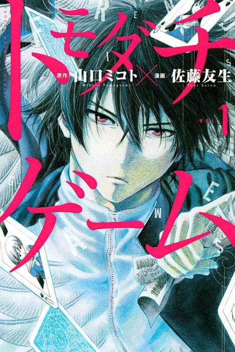

Anime
Anime
MangaTomodachi Game
トモダチゲーム
After the anime, read the manga from Chapter 26.
7.6AniList
—Animeter
12 epEpisodes
Anime finished. Where does the manga pick up?
Start at Chapter26
The anime ends on the events of chapter 25, as the fourth game begins, so continue from chapter 26. The manga is finished at 130 chapters.
125130 end
Season 1Start reading here